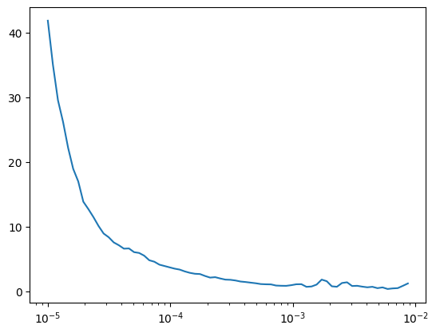
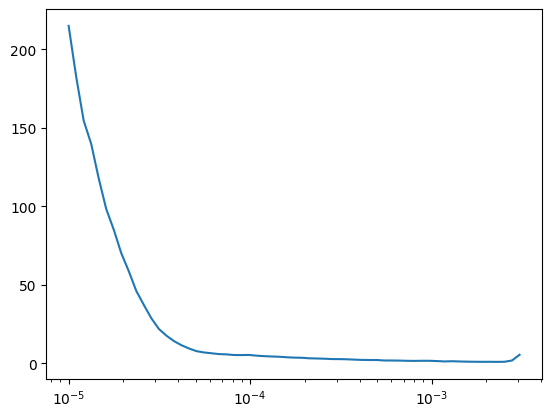
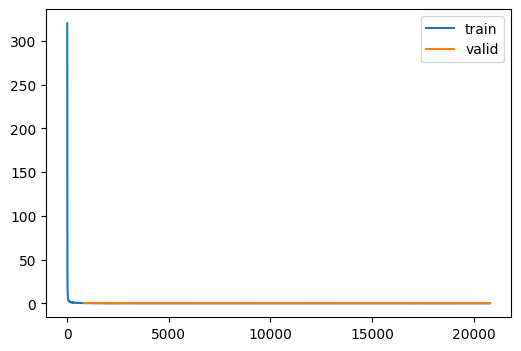
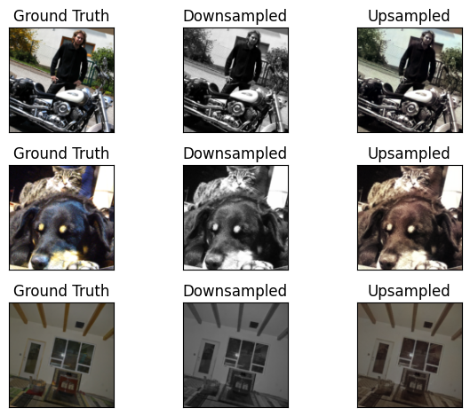

dls = get_coco_dataset_super_rez(bs=128)CPU times: user 3min 25s, sys: 21.5 s, total: 3min 47s
Wall time: 2minCPU times: user 3min 25s, sys: 21.5 s, total: 3min 47s
Wall time: 2minLet’s start with super-resolution, to see how this compares to Imagenet200 and get a sense of the compute requirements.

| loss | epoch | train |
|---|---|---|
| 1.118 | 0 | train |
| 0.191 | 0 | eval |
| 0.124 | 1 | train |
| 0.079 | 1 | eval |
| 0.063 | 2 | train |
| 0.046 | 2 | eval |
| 0.040 | 3 | train |
| 0.034 | 3 | eval |
| 0.030 | 4 | train |
| 0.027 | 4 | eval |
| 0.024 | 5 | train |
| 0.023 | 5 | eval |
| 0.020 | 6 | train |
| 0.020 | 6 | eval |
| 0.018 | 7 | train |
| 0.019 | 7 | eval |
| 0.017 | 8 | train |
| 0.018 | 8 | eval |
| 0.016 | 9 | train |
| 0.017 | 9 | eval |
| 0.015 | 10 | train |
| 0.016 | 10 | eval |
| 0.014 | 11 | train |
| 0.016 | 11 | eval |
| 0.014 | 12 | train |
| 0.015 | 12 | eval |
| 0.013 | 13 | train |
| 0.015 | 13 | eval |
| 0.013 | 14 | train |
| 0.015 | 14 | eval |
| 0.013 | 15 | train |
| 0.014 | 15 | eval |
| 0.012 | 16 | train |
| 0.014 | 16 | eval |
| 0.012 | 17 | train |
| 0.014 | 17 | eval |
| 0.012 | 18 | train |
| 0.014 | 18 | eval |
| 0.012 | 19 | train |
| 0.014 | 19 | eval |
| 0.012 | 20 | train |
| 0.014 | 20 | eval |
| 0.012 | 21 | train |
| 0.014 | 21 | eval |
| 0.012 | 22 | train |
| 0.014 | 22 | eval |
| 0.012 | 23 | train |
| 0.014 | 23 | eval |
| 0.012 | 24 | train |
| 0.014 | 24 | eval |
CPU times: user 2h 17min 53s, sys: 7min 55s, total: 2h 25min 48s
Wall time: 2h 57min 45sLooks great!
Now that we can confidently say that the model does something, we can start to tweak it to do colorization.
The first step is use the data and model as-is and see how well it does.
CPU times: user 3min 35s, sys: 27.6 s, total: 4min 3s
Wall time: 2min 35s
| loss | epoch | train |
|---|---|---|
| 2.717 | 0 | train |
| 0.309 | 0 | eval |
| 0.214 | 1 | train |
| 0.155 | 1 | eval |
| 0.136 | 2 | train |
| 0.119 | 2 | eval |
| 0.115 | 3 | train |
| 0.107 | 3 | eval |
| 0.107 | 4 | train |
| 0.106 | 4 | eval |
| 0.102 | 5 | train |
| 0.101 | 5 | eval |
| 0.098 | 6 | train |
| 0.098 | 6 | eval |
| 0.096 | 7 | train |
| 0.096 | 7 | eval |
| 0.094 | 8 | train |
| 0.093 | 8 | eval |
| 0.092 | 9 | train |
| 0.096 | 9 | eval |
| 0.091 | 10 | train |
| 0.098 | 10 | eval |
| 0.090 | 11 | train |
| 0.091 | 11 | eval |
| 0.088 | 12 | train |
| 0.090 | 12 | eval |
| 0.087 | 13 | train |
| 0.095 | 13 | eval |
| 0.086 | 14 | train |
| 0.098 | 14 | eval |
| 0.085 | 15 | train |
| 0.093 | 15 | eval |
| 0.083 | 16 | train |
| 0.091 | 16 | eval |
| 0.082 | 17 | train |
| 0.088 | 17 | eval |
| 0.081 | 18 | train |
| 0.084 | 18 | eval |
| 0.080 | 19 | train |
| 0.084 | 19 | eval |
| 0.078 | 20 | train |
| 0.083 | 20 | eval |
| 0.077 | 21 | train |
| 0.082 | 21 | eval |
| 0.077 | 22 | train |
| 0.081 | 22 | eval |
| 0.076 | 23 | train |
| 0.081 | 23 | eval |
| 0.076 | 24 | train |
| 0.081 | 24 | eval |

CPU times: user 2h 18min 23s, sys: 8min 6s, total: 2h 26min 29s
Wall time: 2h 59minxb, yb = dls.peek()
xb = xb[3:, ...]
yb = yb[3:, ...]
with torch.no_grad():
yp = un(xb.to(def_device)).cpu()
viz(xb, yb, yp)
That is the most impressive result I’ve ever had with machine learing :D
Alright, here’s my crazy idea. I think the signal is a bit sparse. What if we were able to train each of the upsampler layers with a downsampled version of the input.
TinyUnetWithMultiresolutionOutputs (nfs:list[int]=(32, 64, 128, 256, 512, 1024), n_blocks=(3, 2, 2, 1, 1))
U-net with outputs at multiple resolutions, enabling training that target these lower resolutions
ColorizationLearner ()
Training specific behaviors for the Learner
train2 (model, dls, lr=0.004, n_epochs=25, extra_cbs=[<slowai.learner.MetricsCB object at 0x7faa41d8f430>], loss_fn=<function mse_loss>)
Train the Unet with multiple resolution outputs
un = train2(
TinyUnetWithMultiresolutionOutputs.kaiming(),
dls,
lr=1e-3,
loss_fn=loss_fn,
n_epochs=25,
)| loss | epoch | train |
|---|---|---|
| 10.890 | 0 | train |
| 0.376 | 0 | eval |
| 1.486 | 1 | train |
| 0.180 | 1 | eval |
| 0.920 | 2 | train |
| 0.133 | 2 | eval |
| 0.741 | 3 | train |
| 0.123 | 3 | eval |
| 0.670 | 4 | train |
| 0.109 | 4 | eval |
| 0.633 | 5 | train |
| 0.115 | 5 | eval |
| 0.607 | 6 | train |
| 0.107 | 6 | eval |
| 0.591 | 7 | train |
| 0.098 | 7 | eval |
| 0.577 | 8 | train |
| 0.098 | 8 | eval |
| 0.567 | 9 | train |
| 0.095 | 9 | eval |
| 0.559 | 10 | train |
| 0.098 | 10 | eval |
| 0.550 | 11 | train |
| 0.093 | 11 | eval |
| 0.547 | 12 | train |
| 0.093 | 12 | eval |
| 0.540 | 13 | train |
| 0.103 | 13 | eval |
| 0.534 | 14 | train |
| 0.093 | 14 | eval |
| 0.521 | 15 | train |
| 0.098 | 15 | eval |
| 0.518 | 16 | train |
| 0.091 | 16 | eval |
| 0.510 | 17 | train |
| 0.087 | 17 | eval |
| 0.502 | 18 | train |
| 0.089 | 18 | eval |
| 0.493 | 19 | train |
| 0.087 | 19 | eval |
| 0.488 | 20 | train |
| 0.087 | 20 | eval |
| 0.480 | 21 | train |
| 0.086 | 21 | eval |
| 0.473 | 22 | train |
| 0.086 | 22 | eval |
| 0.467 | 23 | train |
| 0.084 | 23 | eval |
| 0.466 | 24 | train |
| 0.084 | 24 | eval |
CPU times: user 1h 58min 5s, sys: 8min 2s, total: 2h 6min 7s
Wall time: 2h 56min 59s